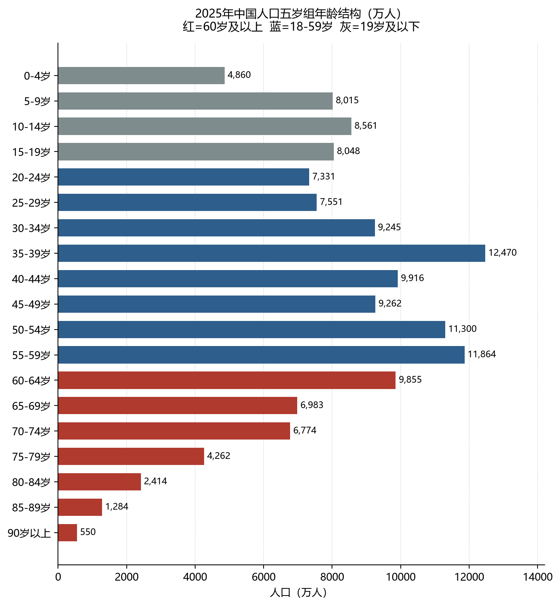
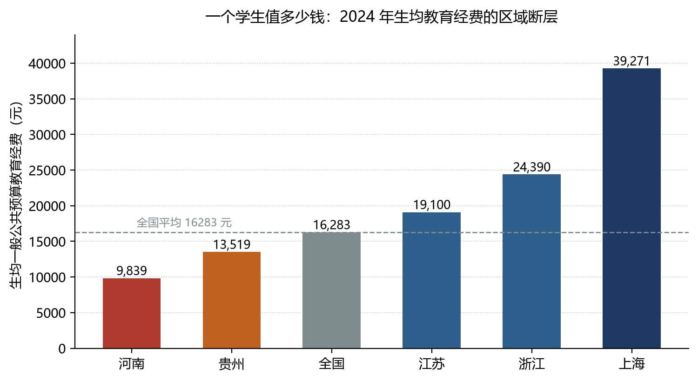
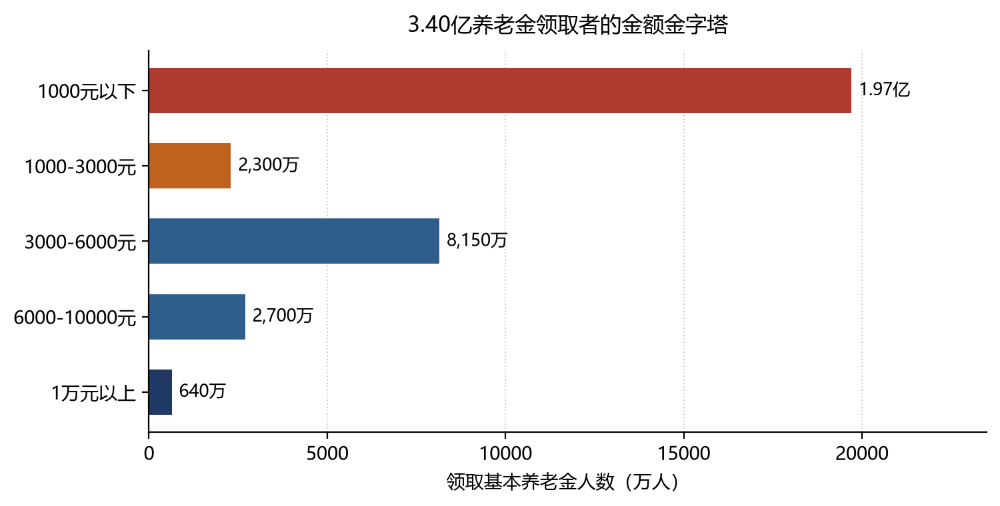
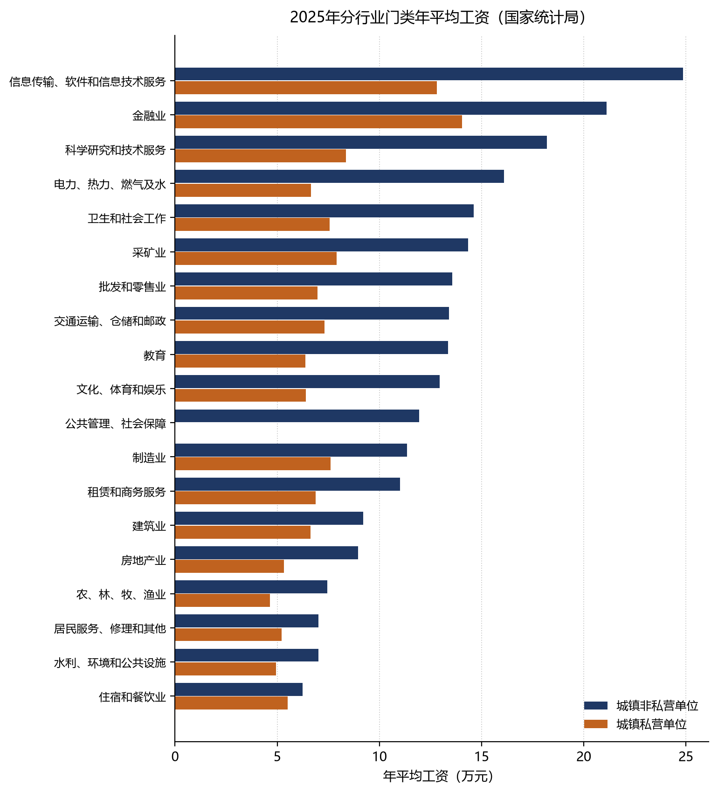
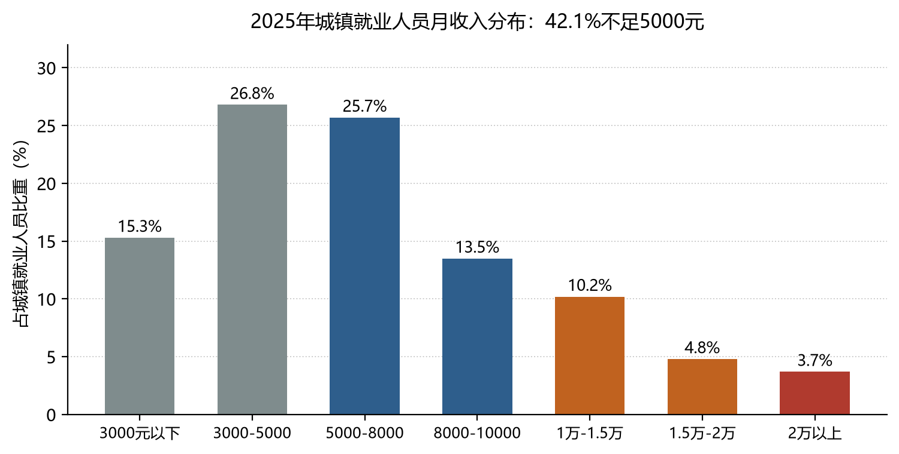

阅读说明：这份报告的可靠性边界
这份报告要做的事只有一件：把 14.05 亿中国人切成足够细的层，并且给每一层标上人数、钱和来源。切法不是随便定的——它必须同时满足三个条件：层与层之间不重叠（同一个人不能同时落在两个层里）、每一层都能对上官方统计的一个口径、每一层的钱能说清是从哪来的。
需要先说清三类数据的成色，因为后面所有结论都建立在这上面：
第一类：官方直接公布，可以直接引用。包括总人口、三个大年龄组、就业人员总数、城镇单位平均工资、各学段在校生、养老保险参保与离退休人数、养老金领取人数。这些数字来自国家统计局《2025 年国民经济和社会发展统计公报》、《2025 年全国 1% 人口抽样调查主要数据公报》、人社部《2025 年度人力资源和社会保障事业发展统计公报》、教育部《2025 年全国教育事业发展统计公报》。误差在统计口径内，可以当事实用。
第二类：官方公布总量，需要自己拆。比如「城镇职工养老保险离退休人员 1.52 亿」是官方数，但其中机关事业多少、企业多少，官方没有单独公布，只能从参保结构反推；再比如「城乡居民养老保险基金支出 6223 亿元」是官方数，除以 1.88 亿领取者，得到月人均 276 元，这个 276 元是算出来的，不是公布的。报告里凡是这类数字，我都会写明「据……推算」。
第三类：只能估算，必须标明。养老金内部的金额分档（谁拿 6000 以上、谁拿 1000 以下）、老年在业人口的行业分布、25-34 岁人群的在业与不在业切分，官方没有交叉表。这些数字是我按已知总量、制度结构和抽样比例搭出来的模型值，量级可靠，尾数不可靠。报告里统一标注为「作者估算」。
换句话说：每层「有多大」基本可信，每层「内部怎么分」是估计。引用时请保留这个区分，否则容易把估算当事实。
第一章 数据底座：14.05 亿人的基本盘
1.1 五个数字先记住
2025 年末，中国大陆总人口 140489 万人，比 2024 年末减少 339 万人。全年出生 792 万人，死亡 1131 万人，自然增长率 -2.41‰。这是总人口连续第四年负增长，也是新中国成立以来出生人口的最低值（1961 年除外）。
2025 年 11 月 1 日零时为标准时点的全国 1% 人口抽样调查（样本 2052 万人，占全国 1.46%）给出了更细的结构。两套数据差 56 万人，属于时点与推算误差，本报告以抽样调查的结构比例为准、以年度公报的总量为准。
| 指标 | 2025 年 | 占比 / 说明 |
| 总人口 | 140489 万人 | 比上年末 -339 万 |
| 出生人口 | 792 万人 | 出生率 5.63‰ |
| 死亡人口 | 1131 万人 | 死亡率 8.04‰ |
| 0-14 岁 | 21436 万人 | 15.25% |
| 15-59 岁 | 86987 万人 | 61.89% |
| 其中 16-59 岁（劳动年龄口径） | 85136 万人 | 60.6% |
| 60 岁及以上 | 32122 万人 | 22.86% |
| 其中 65 岁及以上 | 22309 万人 | 15.87% |
| 城镇常住人口 | 95380 万人 | 67.74% |
| 家庭户 | 51465 万户 | 户均 2.52 人 |
| 平均预期寿命 | 79.25 岁 | 2025 年 |
数据来源：国家统计局《2025 年国民经济和社会发展统计公报》（2026-02-28）、《2025 年全国 1% 人口抽样调查主要数据公报》（2026-05-22）。
还有一组数字常被忽略，但它决定了「人的质量」而不是「人的数量」：全国具有大专及以上文化程度的人口 27233 万人，高中（含中专）24272 万人，初中 45283 万人，小学 33122 万人。也就是说，每 5 个中国人里有 1 个上过大学，每 2 个里有 1 个只有初中及以下学历。
1.2 年龄结构：三个高峰，三条深谷
把人口按五岁一组排开，2025 年的中国呈现出非常清晰的「三峰三谷」。这不是随机形状，每一个凸起和凹陷都对应一段历史。

图 1-1 2025 年中国人口五岁组年龄结构（作者按第七次人口普查队列推算，三大组已校准至官方数）
第一峰 50-54 岁（11300 万）、55-59 岁（11864 万）：1966-1975 年出生高峰，本轮退休潮的主力，正在以每年 2000 万以上的速度进入老年。
第二峰 35-39 岁（12470 万）：1986-1990 年出生高峰，当前消费与房贷的绝对主力。
第三峰 60-64 岁（9855 万）：1961-1965 年出生，刚开始领养老金。
第一谷 20-34 岁（7331 万、7551 万、9245 万）：1991-2005 年出生，计划生育最严时期的产物，比上一代少三分之一。
第二谷 0-4 岁（4860 万）：2021-2025 年出生，五年合计只相当于 1963 年一年的三倍。
第三谷 15-19 岁（8048 万）：2006-2010 年出生，高考与就业的下一波压力源。
这个形状有一个直接后果：未来十五年，中国每年退出劳动年龄的人口约 2000 万，进入的约 1400 万（且逐年下降），净减少 600 万以上。同时 60 岁以上人口将从 3.21 亿升到 4 亿以上。这不是预测，是已经出生的人口的算术。
1.3 三个「人口」不要混
同一份报告里出现多个「亿」，很容易看串。至少要分清四个口径：
| 口径 | 2025 年规模 | 含义与用途 |
| 常住人口 | 14.05 亿 | 分母。所有比例都用它。 |
| 劳动年龄人口（16-59 岁） | 8.51 亿 | 潜在劳动力，不等于在干活。 |
| 就业人员 | 7.25 亿 | 一周工作 1 小时以上即计入，含农村自营。 |
| 基本养老保险参保 | 10.76 亿 | 制度覆盖人数，含已退休。 |
| 领取基本养老金 | 3.40 亿 | 职工离退休 1.52 亿 + 居民领取 1.88 亿。 |
口径差异极大：8.51 亿劳动年龄人口中，实际就业 7.25 亿，在校约 0.5 亿，其余为失业、全职家务、伤病等。
特别提醒一个反直觉的事实：领取养老金的人（3.40 亿）比 60 岁以上的人（3.21 亿）还多约 1900 万。原因是女性工人法定退休年龄为 50 岁（渐进延迟中）、女干部 55 岁，加上病退、特殊工种提前退休，导致相当一部分 50-59 岁的人已经在领养老金。所以在中国，「退休人口」和「老年人口」不是同一群人——这是本报告把「老人」定义成「退休年龄及以上」时必须先讲清的前提。
第二章 主分层：把 14 亿人切成七层
2.1 为什么不能只按年龄切
按年龄切最省事，但会犯三个错误。第一，同龄不同命：同样是 22 岁，一个是 985 硕士在读，一个是电子厂工人，一个是外卖骑手，他们的收入差 10 倍，但年龄组里全算「年轻人」。第二，身份跨年龄：一个 19 岁的大学生在年龄上属于「18-25 岁年轻人」，在身份上属于「学生」，两个体系会重复计数。第三，钱不跟着年龄走：一个 58 岁的处级干部和一个 58 岁的农村妇女，年龄相同，月收入差 30 倍。
所以本报告用两套轴交叉：年龄轴（你是几岁）和身份轴（你靠什么活着）。年龄轴保证不重不漏，身份轴保证能说清钱。
2.2 年龄轴：十一条带子
| 年龄带 | 人口（万人） | 占总人口 | 这一带的主体身份 |
| 0-5 岁 | 6463 | 4.60% | 学龄前，在园 3226 万 |
| 6-14 岁 | 14973 | 10.65% | 小学生、初中生 |
| 15-17 岁 | 4829 | 3.44% | 普高/中职为主，少数流入劳动力市场 |
| 18-24 岁 | 10550 | 7.51% | 大学生 + 青年劳动力，本报告的核心冲突带 |
| 25-34 岁 | 16796 | 11.95% | 职场前十年，婚育与买房 |
| 35-44 岁 | 22386 | 15.93% | 人口最多的十年，收入峰值期 |
| 45-54 岁 | 20562 | 14.63% | 上有老下有小，开始被职场嫌弃 |
| 55-59 岁 | 11864 | 8.44% | 退休前最后五年，内退与再就业并存 |
| 60-69 岁 | 16838 | 11.98% | 低龄老人，一半仍在劳动 |
| 70-79 岁 | 11036 | 7.85% | 中龄老人，照护需求上升 |
| 80 岁及以上 | 4248 | 3.02% | 高龄老人，失能率陡增 |
合计 140545 万人。年龄带划分由作者按第七次人口普查五岁组队列推算至 2025 年 11 月，并校准至 0-14 岁 21436 万、15-59 岁 86987 万、60 岁以上 32122 万三个官方数。单岁切分处（如 0-5 与 6-14 的分界）为按队列均摊的近似值，误差 ±2% 以内。
2.3 身份轴：七层主干
下面是本报告的主干。每一层的划分标准是「主要收入来源」，不是年龄。一个人只能属于一层。
| 层 | 人数 | 主要收入来源 | 内部差异的关键变量 |
| ① 学龄前 | 约 0.65 亿 | 家庭转移支付 | 城乡、是否入园 |
| ② 义务教育学生 | 约 1.57 亿 | 家庭 + 财政 | 公办/民办、城市/县中/村小 |
| ③ 高中阶段学生 | 0.42 亿 | 家庭 + 财政 | 普高/中职，是最大分水岭 |
| ④ 高等教育学生 | 0.44 亿 | 家庭 + 助学贷款 + 兼职 | 本科/高职/研究生，公办/民办 |
| ⑤ 18-24 岁非在校青年 | 约 0.66 亿 | 工资 / 父母 / 零星收入 | 在业、失业、慢就业 |
| ⑥ 25-59 岁在业与家务人口 | 约 7.3 亿 | 工资、经营收入 | 行业、岗位、体制内外 |
| ⑦ 60 岁及以上老年人口 | 3.21 亿 | 养老金、子女、劳动、补贴 | 养老金制度类型与金额 |
第⑥层含 25-59 岁中未就业但承担家务者（估算 3000-4000 万），故人数略高于该年龄段就业人数。各层人数为作者按官方总量拆分，合计约 14.25 亿，略高于总人口，原因是学段口径与年龄口径不完全对齐（如小学在校生含 5 岁入学儿童），不是重复计算。
2.4 交叉矩阵：年龄 × 在做什么
把两套轴叠起来，才看得出真正的结构。下表每一行的人口数加起来等于年龄带总人口；「在校 / 在业 / 失业待业 / 不在劳动力」四列的切分是作者估算。
| 年龄带 | 人口 | 在校 | 在业 | 失业/待业 | 不在劳动力 |
| 0-5 岁 | 6463 | 3226 | — | — | 3237 |
| 6-14 岁 | 14973 | 约 14900 | — | — | 约 70 |
| 15-17 岁 | 4829 | 约 4300 | 约 460 | 约 40 | 约 30 |
| 18-24 岁 | 10550 | 约 3900 | 约 4980 | 约 620 | 约 1050 |
| 25-34 岁 | 16796 | 约 500 | 约 13410 | 约 500 | 约 2386 |
| 35-44 岁 | 22386 | 约 60 | 约 18970 | 约 300 | 约 3056 |
| 45-54 岁 | 20562 | 约 30 | 约 16860 | 约 250 | 约 3422 |
| 55-59 岁 | 11864 | — | 约 10350 | 约 150 | 约 1364 |
| 60-69 岁 | 16838 | — | 约 5750 | — | 约 11088 |
| 70 岁及以上 | 15284 | — | 约 1720 | — | 约 13564 |
单位：万人。「在业」合计约 72500 万，与国家统计局 2025 年末就业人员 72504 万吻合；「不在劳动力」含全职家务、伤病、提前退休、高龄失能。60 岁以上在业约 7500 万，占 60+ 人口 23%，与第七次人口普查 22.6% 的老年就业率一致。
这张表最值得盯的是 18-24 岁那一行：1.055 亿人里，在校 3900 万、在业 4980 万、失业待业 620 万、既不上学也不工作 1050 万。最后这 1050 万就是通常说的 NEET（不升学、不就业、不进修），占该年龄段 10%。他们不在任何统计的「失业率」里——因为失业率只统计「正在找工作的人」，而他们已经不找了。
2.5 一句话看清每一层的钱
学龄前与中小学生：花的是父母的钱。家庭年教育支出从农村的 3000 元到一线城市的 8 万元不等，差距 20 倍以上。
大学生：家庭出大头，国家助学贷款和奖助学金覆盖约三成困难学生，兼职收入月均 1000-3000 元。
18-24 岁非在校青年：起薪决定一切。2025 届本科毕业生起薪中位数约 6000 元，高职约 4500 元，而同期 16-24 岁失业率是 18%。
25-59 岁在业者：工资是唯一主来源。这个群体的分层不按年龄，按行业和岗位——同样 35 岁，信息传输行业年均 24.9 万，住宿餐饮 6.2 万，差 4 倍。
60 岁以上：制度决定命运。机关事业退休月均 6000 元以上，企业退休 3400 元左右，城乡居民 276 元。同一座城市里，三个老人可能差 25 倍。
第三章 学生层：2.75 亿人在读书
2025 年，全国各级各类学历教育在校生 28040 万人，专任教师 1870 万人。如果把成人本专科和网络教育也算上，中国同时有近 3 亿人在「上学」——相当于每 5 个中国人里有 1 个。
| 学段 | 在校生（万人） | 招生（万人） | 毕业生（万人） | 毛入学/巩固率 |
| 学前教育 | 3225.52 | — | — | 毛入园率 92.90% |
| 小学 | 10178.29 | 1461.70 | 1860.51 | — |
| 初中阶段 | 5509.34 | 1852.81 | 1723.74 | 九年巩固率 96.10% |
| 普通高中 | 3039.50 | — | — | — |
| 中等职业教育 | 1118.77 | 369.93 | 404.92 | — |
| 高中阶段合计 | 4158.27 | — | — | 毛入学率 92.00% |
| 普通本科 | 2135.77 | 503.71 | — | — |
| 职业本科 | 51.83 | 15.41 | — | — |
| 高职（专科） | 1766.36 | 551.70 | — | — |
| 在学研究生 | 429.95 | 143.85 | 116.65 | — |
| 特殊教育 | 92.70 | 16.44 | — | — |
| 成人本专科 | 805.90 | 308.25 | 431.18 | — |
| 网络教育本专科 | 542.35 | 148.30 | 184.84 | — |
数据来源：教育部《2025 年全国教育事业发展统计公报》（2026-07-06）。高等教育毛入学率 61.30%。在校生合计 28040.43 万人，与本表主要学段合计的差额来自统计口径（特殊教育、成人、网络教育的计入方式）。
3.1 高中阶段：普职分流是第一个分水岭
4158 万高中生里，普通高中 3040 万，中等职业教育 1119 万，普职比约 73:27。这个比例比很多人以为的「五五分流」宽松得多——因为统计上「高中阶段」包含了中职，而中职里又有相当一部分是「3+2」贯通培养，实际通向大专。
但结构上的差异仍然巨大：民办普通高中在校生 600.82 万人，占普高的 19.77%；民办中职在校生 223.52 万人，占中职的 19.98%。民办意味着学费，意味着家庭在 15 岁就完成了一次经济筛选。
更关键的是出口。2025 年高考报名人数继续维持在 1300 万以上量级，而本科招生（含职业本科）约 519 万。也就是说，同一届高中生里，能上本科的不到四成，其余进入高职、复读、出国或直接就业。这条分流线，比高考本身更能决定一个人 25 岁时的收入位置。
3.2 高等教育 4384 万：内部的五个世界
| 类型 | 在校生（万人） | 占比 | 学制 | 典型年学费 | 毕业起薪中位数（估） |
| 博士研究生 | 75.36 | 1.7% | 4-6 年 | 1 万 | 1.2 万-2 万/月 |
| 硕士研究生 | 354.60 | 8.1% | 2-3 年 | 0.8-1.3 万 | 8000-1.2 万/月 |
| 普通本科（公办为主） | 约 1900 | 43.3% | 4 年 | 0.5-0.7 万 | 5500-7000/月 |
| 普通本科（民办） | 约 236 | 5.4% | 4 年 | 2-4 万 | 4500-6000/月 |
| 职业本科 | 51.83 | 1.2% | 4 年 | 0.6-1.5 万 | 5000-6500/月 |
| 高职（专科） | 1766.36 | 40.3% | 3 年 | 0.5-1 万 | 4000-5000/月 |
在校生数为教育部公报数；普通本科内部公办/民办的拆分、学费与起薪为作者按公开报道与招聘平台数据估算，仅表示量级。2025 届高校毕业生 1222 万人，2026 届预计 1270 万人。
把这张表竖着看，会发现一个被平均数掩盖的事实：4384 万大学生里，真正处于「精英通道」（博士 + 双一流本科 + 热门专业硕士）的不足 400 万，不到 10%；而 1766 万高职生加上 236 万民办本科生，构成了另外 45%。他们共享同一个词「大学生」，但毕业五年后的收入差可以达到 4-5 倍。
3.3 学生层的钱从哪来
家庭教育支出：全国平均每个学生每年约 1.2 万元（含学费、住宿、生活费、补课），农村约 5000 元，一线城市中产家庭 5-8 万元。
国家财政：2025 年全国教育支出约 4.5 万亿元，占 GDP 约 3.2%，其中义务教育占大头。
助学贷款：国家助学贷款累计发放规模已超 4000 亿元，2025 年在校生贷款余额约 2000 亿元，覆盖约 500 万学生，人均每年 1.2 万元。
奖助学金：本专科国家奖学金 1 万人（每人 8000 元）、国家励志奖学金 6 万人（5000 元）、国家助学金覆盖约 30% 在校生（人均 3300 元/年）。
兼职收入：约 40% 的大学生有兼职，月均 1000-3000 元，以家教、餐饮、外卖、直播为主。
一条容易被忽视的线：学生层的消费能力被严重低估。2.75 亿学生加上背后的家庭，构成了中国最大的单一消费决策群体——教育、住房（学区）、电子产品、服装、餐饮都围绕它运转。理解中国消费，绕不开这一层。
3.4 区域分化：同样的学生，三种命运
前三节用的是全国平均数，但「中国学生」从来不是一个整体——一个上海中产家庭的孩子、一个河南县城高中生、一个凉山彝区的幼童，走的是完全不同的三条路。把镜头从全国拉近到区域，学生层的分化比年龄分化更残酷。这里取三个样本：江浙沪（发达的天花板）、河南（人口大省的挤压）、以凉山和贵州为代表的山区（极落后的起点）。下表统一用 2024 年最新已公布的官方数，便于同口径比较。
| 指标（2024） | 江浙沪 | 河南 | 贵州 / 凉山 | 全国 |
| 高等教育毛入学率 | 江苏>70%，沪浙约65% | 59.6% | 51.8% | 60.8% |
| 生均教育经费（元） | 沪39271/浙24390/苏19100 | 9839 | 13519 | 16283 |
| 高考本科录取率 | 沪71.4%/苏60.1%/浙48.9% | 37.7% | 52.4% | 46.2% |
| 985 录取率 | 沪3.63%/浙2.26%/苏1.88% | 0.97% | 1.53% | — |
| 211 录取率 | 沪12.18%/苏6.79%/浙5.12% | 2.89% | 6.05% | — |
高考录取率为「本科计划数÷有效高考人数」口径（各省教育考试院 2024 数据）；生均经费为「生均一般公共预算教育经费」，来源教育部及各省《2024 年教育经费执行情况统计公告》；毛入学率来源各省《2024 年教育事业发展统计公报》。上海、浙江毛入学率未公布精确分省值，为作者按高校学位供给与适龄人口推算的近似值。
江浙沪天花板有多高，取决于出生在哪座城
江苏高等教育毛入学率已超过 70%，浙江「学前三年到高中段」15 年教育普及率超过 99%、义务教育巩固率 100%，上海本科录取率 71.4% 高居全国第一——每 10 个上海考生有 7 个能上本科，而河南不到 4 个。生均经费上，上海 3.93 万、浙江 2.44 万、江苏 1.91 万，全部高于全国平均 1.63 万。更关键的差距在优质通道：上海 211 录取率 12.18%，是河南 2.89% 的 4.2 倍；上海 985 录取率 3.63%，是河南 0.97% 的 3.7 倍。同样一个「能上 211」的孩子，生在河南和在浙江，需要挤过的独木桥宽度差 4 倍。
但江浙沪内部并不铁板一块。浙江本科录取率只有 48.9%，甚至低于全国平均，是「江浙沪」里最卷的一个——浙江高考报名 40.5 万人、普通高校却只有 109 所（江苏 172 所、上海 69 所），优质本科供给相对人口明显偏少。上海则是「户口的红利」：71.4% 的本科录取率里，很大一部分来自本地高校对本地生源的倾斜。换句话说，同一个「江浙沪」标签下，浙江考生和上海考生面对的其实是两个难度。
河南教育大省，也是教育最卷的省
河南有两项全国第一：高考报名 136 万人（占全国 10.1%，是上海的 20 倍），高校数量 174 所（也是全国第一）。但把这两项「第一」放在一起，结果是全国最残酷的挤压：174 所高校里本科院校只有 60 所，全省 211 只有郑州大学 1 所（全国百余所 211 里河南只占 1 所）。136 万考生抢这么点优质学位，本科录取率 37.7% 全国垫底，985 录取率 0.97%、211 录取率 2.89% 双双全国倒数第一。
更细的切面：2024 年河南一本上线 15.59 万人，但文科一本录取率不足 8%；600 分以上考生 2.56 万人，几乎等于北京全部考生的一半；复读生占比超过 30%，意味着相当一部分河南孩子读的是「第二次高三」。钱这一侧同样难看：河南生均教育经费 9839 元，只有全国平均的 60%、上海的 1/4，是全国的垫底区间——一个教育人口全国第一（2717.75 万）的省，却用全国倒数的人均投入在供养学生。生师比也挤：普通高校 18.24:1（全国最差一档），普通高中 13.73:1，义务教育阶段还有 5834 个 56-65 人的大班、427 个 66 人以上的超大班。河南的痛不在「没有学校」，而在「136 万人把一切都稀释了」。
山区很多人根本没走到高考那一步
如果说河南的痛是「僧多粥少」，山区的痛是「粥都端不上桌」——大量孩子在高考之前，就因贫困、语言、辍学掉队了。凉山（大凉山彝区）是最典型的样本：2014 年学前三年毛入园率只有 50.73%，彝区孩子普遍要到小学二三年级才会说汉语，一上学就因为听不懂而厌学、辍学。2015 年四川启动「一村一幼」计划，现在凉山有 2438 个村级幼教点、8.98 万在园幼儿、7899 名辅导员；到 2023 年，在园儿童普通话合格率从 2019 年的 73.5% 提高到 99.7%，2.2 万名贫困户失学儿童全部返校——而支撑这些的，是辅导员每人每月 3000 元的劳务报酬（2022 年还是 2000 元）。
贵州的账同样值得看：农村义务教育学生营养改善计划从 2012 年实施，累计投入 341.83 亿元，每年惠及 380 万以上农村学生；控辍保学通过「县长、局长、乡长、村长、校长、班主任、家长」七长责任制，在 2019 年实现建档立卡失学辍学动态清零。但起点仍然很低：贵州高等教育毛入学率 51.8%（2024 年刚突破 50%），全国最低档，比河南还低 8 个百分点，比江苏低近 20 个百分点。这就是山区的结构——不是「考不上好大学」，而是「一半以上的同龄人根本没进大学那条路」。

图 3-1 2024 年生均一般公共预算教育经费的区域断层（教育部及各省教育经费执行情况统计公告）
把三个样本叠在一起，最刺眼的是生均经费这条线：上海 3.93 万、河南 9839 元，整整 4 倍。财政在每个上海学生身上花的钱，够养 4 个河南学生。而这条线的两端，一边是 71.4% 的本科录取率，一边是 0.97% 的 985 录取率。区域不是「差距」，是「断层」——一个孩子能走多远，在他出生在哪个省的哪座县城那一刻，就已经被写进了预算表。
第四章 年轻层：1.06 亿人的 18-24 岁
这是全社会最焦虑的年龄段，也是数据最难看清楚的年龄段。原因是它同时装着三种人：还在读书的、刚上班的、以及既没读书也没上班的。
4.1 18-24 岁：1.055 亿人怎么分
| 身份 | 人数（万人） | 占比 | 月收入/状态 | 关键特征 |
| 在校大学生（含研究生） | 约 3900 | 37.0% | 净支出，靠家庭 | 学费生活费由家庭承担 |
| 在业（含灵活就业） | 约 4980 | 47.2% | 中位 4500-5500 元 | 制造业、餐饮零售、外卖、销售为主 |
| 失业但求职 | 约 620 | 5.9% | 0 | 16-24 岁调查失业率 18.0% |
| NEET（不升学不就业） | 约 1050 | 10.0% | 靠父母 | 考公考研二战、带娃、躺平 |
在校生 3900 万为作者按高等教育在校生年龄分布估算；失业人口按 2026 年 9 月 16-24 岁（不含在校生）城镇调查失业率 18.0% 反推城镇部分，再按城乡比例放大；NEET 规模为残差法估算。
这四类人的差别不是「努力程度」，而是「谁在为你付账单」。在校生由家庭付账，在业者由老板付账，失业者由积蓄和家庭付账，NEET 由父母付账。18-24 岁这一层，本质上是一个巨大的「家庭内部转移支付系统」。
4.2 失业率的真相：18% 是怎么来的
2026 年 9 月，全国城镇调查失业率 5.2%，其中 16-24 岁（不含在校生）18.0%，25-29 岁 7.4%，30-59 岁 3.9%。青年失业率是中年人的 4.6 倍。
这个数字要拆开看才不误解：
分母很小：16-24 岁不含在校生的城镇劳动力约 3400 万人，只占全国就业人口的 4.7%。18% 意味着约 620 万人失业，不是 2000 万。
波动极大：2026 年 6 月曾低至 14.9%，8 月升至 18.9%，毕业季前后能差 4 个百分点。
结构性而非周期性：失业者中大专及以上学历占比超过一半，而制造业、建筑业、家政的岗位长期招不到人。这是「学历供给」与「岗位需求」错配，不是简单的需求不足。
统计外的人更多：每周工作 1 小时即算就业，外卖骑手、直播带货、摆摊都计入「就业」。真正的闲置人口在 NEET 那 1050 万里，不在失业率里。
4.3 25-34 岁：1.68 亿人的十年
如果 18-24 岁的主旋律是「进场」，25-34 岁的主旋律就是「定价」——你的工资在这一段基本定型，之后只随行业景气波动。
| 指标 | 25-29 岁 | 30-34 岁 | 说明 |
| 人口 | 7551 万 | 9245 万 | 30-34 岁是 90 年代初出生高峰 |
| 调查失业率 | 7.4% | 约 4.5% | 30 岁后显著下降 |
| 平均初婚年龄 | 男 30.1 / 女 28.4 岁 | — | 2025 年，一线城市更高 |
| 总和生育率 | 约 1.0 | — | 2025 年，全球主要经济体最低之一 |
| 城镇就业月收入中位数 | 约 6000 元 | 约 7000 元 | 作者按收入分布估算 |
| 住房自有率（城镇） | 约 35% | 约 55% | 含父母资助首付 |
初婚年龄与生育率来自民政部、国家统计局年度数据；收入与住房为估算值，仅表示量级。
这一层最硬的两个约束是房子和孩子。2025 年城镇居民人均可支配收入 56502 元，而一线城市房价收入比仍在 25 倍以上；一个孩子从出生到大学毕业的直接支出，中等城市约 50 万元，一线城市 150 万元以上。25-34 岁的人不是在「消费」，是在「还款」。
4.4 学历还值钱吗
值钱，但溢价在收窄。2025 年城镇非私营单位中，专业技术人员年平均工资 155491 元，比生产制造人员 80739 元高 93%；但这是「岗位」的差距，不是「学历」的差距——一个高职毕业的护士、电工、数控技师，收入可以超过普通本科文科生。
更准确的说法是：学历决定你的「第一份工作能不能进门槛」，行业决定你的「天花板」。同样是本科，进信息传输行业年均 24.9 万，进住宿餐饮 6.2 万，差 4 倍。选专业的重要性，在这一代身上第一次超过了选学校。
第五章 中年层：5.48 亿人的 35-59 岁
这是人口最多、话语权最小、数据最不性感的一层。5.48 亿人，占总人口 39%，贡献了全国约 60% 的劳动收入和绝大部分社保缴费，但在公共讨论里几乎隐形。
| 年龄段 | 人口（万人） | 占总人口 | 在业（估） | 失业率 | 典型状态 |
| 35-39 岁 | 12470 | 8.87% | 约 10600 | 约 3.5% | 收入峰值，房贷+育儿双压 |
| 40-44 岁 | 9916 | 7.06% | 约 8370 | 约 3.9% | 晋升天花板，开始被优化 |
| 45-49 岁 | 9262 | 6.59% | 约 7700 | 约 4.2% | 再就业困难，转向灵活就业 |
| 50-54 岁 | 11300 | 8.04% | 约 9160 | 约 4.5% | 女性开始退休，男性内退 |
| 55-59 岁 | 11864 | 8.44% | 约 10350 | 约 5.0% | 退休前五年，返乡与带孙 |
人口为作者推算值；在业与失业为估算，参考 2026 年 9 月 30-59 岁城镇调查失业率 3.9%。
5.1 「35 岁门槛」是真的吗
是真的，但被误解了。35 岁不是「失业线」，是「招聘线」。绝大多数互联网、金融、地产企业的社招岗位写着「35 岁以下」，公务员考试长期以 35 岁为限（2023 年起部分岗位放宽至 40 岁）。结果是：35 岁以上的人不是找不到工作，是找不到「同等薪资的工作」。
数据上能看到这个转折：30-59 岁整体失业率只有 3.9%，看起来非常稳定；但 45 岁以上失业者的平均失业持续时间超过 12 个月，是 25 岁群体的 3 倍。他们不是失业，是「退出」——转去开网约车、做保安、回老家、提前退休。这也是为什么 55-59 岁在业率骤降：2025 年这一带在业约 1.04 亿，占 87%，但其中相当一部分是「灵活就业」而非正式雇佣。
5.2 中年人的三重负担
向上：赡养 4 位老人。60 岁以上人口 3.21 亿，其中约 4500 万失能半失能，照护成本主要由 35-59 岁子女承担。
向下：抚养 1 个孩子。0-17 岁人口约 2.6 亿，教育支出占家庭支出 25-40%。
向内：自己的养老。职工养老保险替代率约 42%，意味着退休后收入不到在职时的一半，必须靠个人储蓄补足。
总抚养比（0-14 岁 + 65 岁以上 / 15-64 岁）2025 年约 47%，即 100 个劳动年龄人口养 47 个被抚养人口。2035 年将超过 60%。这不是「未来会发生的危机」，是「正在发生的成本」。
5.3 收入峰值在 40 岁，之后是缓慢下坡
按 2025 年城镇单位工资数据，35-44 岁是收入的绝对峰值段。以规模以上企业为例：中层及以上管理人员年均 21.0 万元，专业技术人员 15.5 万元，办事人员 9.5 万元，生产制造人员 8.1 万元，社会生产服务人员 8.0 万元。这些平均数在中位数上要打八折——一半的管理者拿不到 21 万。
45 岁之后，除非进入管理层或体制内，收入曲线普遍走平甚至下滑。这也是「中年危机」的经济学解释：支出在上升（老人医疗、孩子教育），收入在走平，两者交叉的那一年，就是大多数家庭的现金流拐点。
第六章 老年层：3.21 亿人的十种活法
这是本报告最细的一章，因为「老人」是最容易被平均数掩盖的群体。一个 62 岁的退休厅级干部和一个 68 岁的农村老太太，官方统计里都是「60 岁及以上人口」，但他们的月收入差 20-30 倍，生活方式、医疗资源、话语权也完全不同。
先把三个基础事实摆出来：
60 岁及以上 32122 万人，占 22.86%；65 岁及以上 22309 万人，占 15.87%。中国已经进入中度老龄化（65 岁以上超 14%）。
领取基本养老金的人数 3.40 亿，比 60 岁以上人口还多约 1900 万——因为女性工人 50 岁、女干部 55 岁就能退休。
60 岁以上仍在工作的人约 7500 万，占老年人口 23%；其中 66% 在种地。
6.1 先按年龄切三段
| 段 | 人口（万人） | 占老年人口 | 健康与能力 | 典型状态 |
| 低龄老人 60-69 岁 | 16838 | 52.4% | 大部分自理，七成无重大慢病 | 带孙、返聘、种地、旅游 |
| 中龄老人 70-79 岁 | 11036 | 34.4% | 慢病高发，部分失能 | 照护需求上升，活动半径缩小 |
| 高龄老人 80 岁及以上 | 4248 | 13.2% | 失能率超 30% | 需长期照护，女性占多数 |
人口为作者推算值，三大组已校准至官方 32122 万。失能率参考国家卫健委与中国老龄科研中心历次调查。
这三段的意义完全不同。低龄老人是「资源」——他们有体力、有经验、有退休金，是银发经济的主力；中龄老人是「负担的开始」——照护支出从这一阶段快速上升；高龄老人是「刚需」——医疗和照护是刚性支出，家庭财务在这里最容易崩。
6.2 关键分层：养老金制度的四轨制
中国老人的贫富差距，九成由「你退休前在哪个制度里」决定，而不是由「你存了多少钱」决定。这是历史遗留的双轨制在 2015 年并轨改革后仍未消除的存量结果。
| 轨道 | 覆盖人群 | 领取人数 | 月人均养老金 | 钱从哪来 |
| 机关事业单位养老保险 | 公务员、教师、医生、事业单位职工 | 约 2350 万 | 6200-7200 元 | 财政 + 单位 + 个人 |
| 企业职工基本养老保险 | 国企、民企、外企职工，灵活就业挂靠者 | 约 1.29 亿 | 3400-3500 元 | 单位 16% + 个人 8% |
| 城乡居民基本养老保险 | 农民、城镇无业居民 | 1.88 亿 | 276 元 | 个人缴费 + 财政补贴（占 82%） |
| 无养老金 | 未参保老人、部分高龄农村女性 | 约 600 万 | 0 | 子女赡养 + 低保/特困供养 |
领取人数：城镇职工离退休 15215 万（官方），其中机关事业约 2350 万（按 2024 年 2303.5 万外推）、企业约 1.29 亿；城乡居民领取 18820 万（官方）。月人均：职工养老基金支出扣除居民后的 71204 亿元 ÷ 1.5215 亿 ÷ 12 = 3899 元（含机关事业），据此拆分出企业约 3450 元、机关事业约 6300 元；居民 6223 亿元 ÷ 1.882 亿 ÷ 12 = 276 元。以上拆分与「无养老金」人数为作者估算。
这四条轨道的差距有多大？财政补贴的数据最直白：2023 年财政对机关事业、企业职工、城乡居民养老保险的补贴分别为 5991 亿元、7731 亿元、3789 亿元，对应领取人数 2204 万、1.2 亿、1.7 亿，折合人均月补贴 2265 元、537 元、183 元。即使完全剔除个人缴费因素，机关事业老人获得的财政补贴仍是农村老人的 12 倍。
还有一个数字能说明问题：2023 年上海城乡居民月人均养老金 1651 元、北京 1484 元，而中部六省、东北三省多数不足 300 元。同样是中国公民，同样缴满 15 年居民养老保险，因为户籍不同，月养老金差 5 倍。
6.3 按金额切五档：3.4 亿人的金字塔
这是本报告最核心的一张表，也是你要求的那套分档。全国 3.40 亿养老金领取者，按月到手金额分成五档：
| 月养老金档位 | 人数（万人） | 占比 | 主要是谁 | 生活状态 |
| 1000 元以下 | 19710 | 58.0% | 城乡居民 1.88 亿 + 极少数低待遇职工 | 勉强覆盖吃饭，医疗靠子女 |
| 1000-3000 元 | 2300 | 6.8% | 企业退休中的低工龄、低基数者、灵活就业退休 | 县城温饱，无余力 |
| 3000-6000 元 | 8150 | 24.0% | 企业退休主体 + 机关事业工勤岗 | 地级市中等生活 |
| 6000-10000 元 | 2700 | 7.9% | 机关事业主体 + 央企/垄断国企退休 | 一二线中产，可旅游 |
| 10000 元以上 | 640 | 1.9% | 高级职称、厅局级以上、央企高管 | 超过多数在职年轻人 |
总量 3.40 亿 = 城镇职工离退休 15215 万 + 城乡居民领取 18820 万。分档为作者按四轨人数与各轨内部收入分布估算：中国社会保障学会 2025 年 2 月报告给出的结构为「月养老金 3000 元以下 2.08 亿（60.1%）、3000-10000 元 1.32 亿（38.0%）、1 万元以上 640 万（1.8%）」，本表在该结构约束下进一步拆分档位。

图 6-1 2025 年中国基本养老金领取者的金额分布（作者估算，总量校准至官方 3.40 亿）
这张图有三个值得记住的结论：
第一，六成老人月养老金不到 3000 元。其中 1.97 亿人在 1000 元以下，几乎全部是城乡居民养老保险的领取者。他们的「养老金」在多数省份就是 143-300 元的基础养老金加几十元个人账户，本质上更接近「老年津贴」，而不是「退休工资」。
第二，6000 元以上只有 3340 万人，不到一成。但就是这一成，拿走了职工养老基金支出的一半以上。按 2025 年数据粗算：机关事业 2350 万人月均 6300 元，年支出约 1.78 万亿元，占职工养老基金支出 7.12 万亿的 25%。
第三，塔尖的 640 万人月入过万，超过半数在职年轻人。2025 年城镇私营单位月均工资 5966 元，也就是说，一个月拿 1 万元养老金的退休者，收入高于 70% 以上的在职职工。这是「退休金倒挂」，也是年轻人不满情绪的重要来源。
6.4 分层树：老人的十种活法
把制度、年龄、在业状态叠起来，可以画出下面这棵树。这是本报告对「老年人」最细的一层切分：
| 一级 | 二级 | 三级（子群） | 人数（万） | 月收入区间 |
| 有职工养老金 1.52 亿 | 机关事业 2350 万 | 厅局级/正高职称以上 | 约 300 | 8000-20000 |
| 普通公务员、教师、医生 | 约 1300 | 5000-8000 | ||
| 机关事业工勤、基层事业编 | 约 750 | 3500-5000 | ||
| 企业 1.29 亿 | 央企/垄断国企（电力、烟草、金融） | 约 1500 | 5000-10000+ | |
| 地方国企、大型民企 | 约 2500 | 3500-5500 | ||
| 中小民企、外资普通职工 | 约 6000 | 2500-4500 | ||
| 灵活就业挂靠缴费 15 年者 | 约 2900 | 1200-2500 | ||
| 有居民养老金 1.88 亿 | 城镇无业居民 | — | 约 4000 | 200-1600 |
| 农村老人 | — | 约 14800 | 143-400 | |
| 无养老金 约 600 万 | 特困供养（五保） | — | 约 470 | 政府兜底 800-1200 |
| 靠子女赡养 | — | 约 130 | 不确定 |
单位：万人。机关事业与企业内部的三级拆分、居民养老金内部城乡拆分均为作者估算，依据为参保结构、行业工资分布与历次老龄调查。特困供养人数为民政部口径约数。
再叠一层「是否仍在工作」，老年层就变成了完整的十种活法：
① 返聘型：医生、教师、工程师、会计，退休后被原单位或民营机构返聘，月入 5000-20000 元，占老年在业者不到 5%，但收入最高。
② 经营型：退休后开小店、做咨询、炒股、收租，月入 3000-20000 元不等，集中在城镇有房群体。
③ 务农型：农村低龄老人，种自家地或流转地，年收入 5000-20000 元，占老年在业者的 66%，人数约 5000 万。
④ 建筑型：60 岁以上男性在工地做小工、看场，日薪 150-300 元，占老年在业者 7%，约 550 万。
⑤ 制造型：电子厂、服装厂、食品厂的老年工人，月薪 3000-4500 元，约 500 万。
⑥ 商贩型：摆摊、收废品、卖菜，月入 1000-4000 元，约 470 万。
⑦ 服务型：保安、保洁、家政、护工，月薪 2000-3500 元，约 200 万，是城市里最常见的「银发打工人」。
⑧ 平台型：网约车、外卖、直播，60 岁以上占比很小，约 100 万。
⑨ 带孙型：不工作，替子女带孩子，经济上靠养老金，劳动上无偿，是最大的一块隐形劳动。
⑩ 失能型：卧床或半卧床，需专人照护，约 4500 万人（失能+半失能），家庭照护成本每月 3000-8000 元。
6.5 老年人在业的行业结构
| 行业 | 占老年在业者比重 | 人数（估，万） | 典型收入 |
| 农、林、牧、渔业 | 66.1% | 约 5000 | 年 5000-20000 元 |
| 建筑业 | 7.0% | 约 550 | 日薪 150-300 元 |
| 制造业 | 6.6% | 约 500 | 月 3000-4500 元 |
| 批发和零售业 | 6.3% | 约 470 | 月 2000-5000 元 |
| 居民服务、修理和其他服务业 | 2.7% | 约 200 | 月 2000-3500 元 |
| 其他（含科研技术服务、教育、卫生） | 11.3% | 约 850 | 返聘可达 2 万，其余较低 |
行业结构来自第七次全国人口普查 60 岁及以上就业人口的行业分布；人数按老年在业 7500 万折算；收入为作者按各地招聘与调查数据估算。
还有一个城乡鸿沟值得单列：2020 年城市老年就业率 7.7%，乡村 34.4%。也就是说，城里老人十个里不到一个还在工作，农村老人三个里就有一个在干活。这不是「农村老人更勤劳」，而是「农村养老金不够活」。
6.6 健康、照护与居住
| 指标 | 规模 | 说明 |
| 失能、半失能老人 | 约 4500 万 | 占 60+ 的 14%，其中重度失能约 1000 万 |
| 患有一种以上慢性病 | 约 1.9 亿 | 占 60+ 的 59% |
| 空巢或独居老人 | 约 1.3 亿 | 占 60+ 的 40%，农村比例更高 |
| 养老床位 | 约 900 万张 | 每千名老人约 28 张，与发达国家 50 张仍有差距 |
| 入住机构养老 | 约 300 万人 | 不足老年人口的 1%，九成靠居家 |
| 长期护理保险试点 | 49 个城市 | 覆盖约 1.8 亿人，2025 年起全面推开 |
失能规模参考国家卫健委、中国老龄科研中心调查；床位与机构入住为民政部口径约数；长护险试点城市数为国家医保局公布。
「9073」是中国养老的基本格局：90% 居家、7% 社区、3% 机构。这意味着绝大多数老人的照护责任落在家庭，尤其是 45-59 岁的女儿和儿媳身上。这一层隐形劳动，在任何统计里都找不到，但它是中国社会运转的真实成本。
6.7 一句话总结老年层
中国老人的问题不是「穷」，是「分裂」。3.21 亿人里，3340 万人过着中产退休生活，1.9 亿人靠每月两三百元的基础养老金和子女过活，中间那 8000 多万企业退休职工，构成了「比上不足、比下有余」的缓冲带。任何关于「养老」的政策讨论，如果不先区分这三段，就一定会得出错误结论。
第七章 在业人口：7.25 亿人的职业分层
这一章不讲年龄，讲「你靠什么赚钱」。2025 年末全国就业人员 72504 万人，其中城镇 47535 万人（65.6%）。三次产业分布：第一产业 22.2%，第二产业 28.4%，第三产业 49.4%。
| 产业 | 就业人数（万人） | 占比 | 典型职业 | 月收入中位（估） |
| 第一产业 | 16096 | 22.2% | 农民、养殖、林业、渔业 | 1500-2500 |
| 第二产业 | 20591 | 28.4% | 制造、建筑、采矿、电力 | 4500-6500 |
| 第三产业 | 35817 | 49.4% | 批发零售、餐饮、物流、金融、教育、医疗、IT | 4000-8000 |
就业人数按国家统计局 2025 年三次产业占比乘以就业总量 72504 万计算；月收入中位为作者估算。
7.1 十九个行业门类的工资地图

图 7-1 2025 年城镇非私营与私营单位分行业门类年平均工资（国家统计局，2026-05-15）
| 行业门类 | 非私营（元/年） | 私营（元/年） | 非私营月均 | 倍数（对住宿餐饮） |
| 信息传输、软件和信息技术服务业 | 248752 | 128166 | 20729 | 3.98 |
| 金融业 | 211164 | 140451 | 17597 | 3.38 |
| 科学研究和技术服务业 | 182064 | 83560 | 15172 | 2.91 |
| 电力、热力、燃气及水生产和供应业 | 160897 | 66451 | 13408 | 2.58 |
| 卫生和社会工作 | 146266 | 75631 | 12189 | 2.34 |
| 采矿业 | 143361 | 79169 | 11947 | 2.30 |
| 批发和零售业 | 135749 | 69622 | 11312 | 2.17 |
| 交通运输、仓储和邮政业 | 133981 | 73133 | 11165 | 2.14 |
| 教育 | 133539 | 63908 | 11128 | 2.14 |
| 文化、体育和娱乐业 | 129447 | 64015 | 10787 | 2.07 |
| 公共管理、社会保障和社会组织 | 119465 | — | 9955 | 1.91 |
| 制造业 | 113594 | 76055 | 9466 | 1.82 |
| 租赁和商务服务业 | 110162 | 68919 | 9180 | 1.76 |
| 建筑业 | 92036 | 66275 | 7670 | 1.47 |
| 房地产业 | 89679 | 53338 | 7473 | 1.44 |
| 农、林、牧、渔业 | 74424 | 46552 | 6202 | 1.19 |
| 居民服务、修理和其他服务业 | 70226 | 52059 | 5852 | 1.12 |
| 水利、环境和公共设施管理业 | 70172 | 49527 | 5848 | 1.12 |
| 住宿和餐饮业 | 62461 | 55123 | 5205 | 1.00 |
数据来源：国家统计局《2025 年城镇单位就业人员年平均工资情况》。合计：非私营 129441 元、私营 71590 元、规模以上企业 106080 元。私营单位公共管理行业无数据。
这张表最重要的信息不是「IT 最高」，而是行业极差 3.98 倍。一个在信息传输行业工作的普通员工，年薪等于 4 个住宿餐饮从业者。而这两个行业的人数都超过千万——行业选择的影响，远大于个人努力。
7.2 五类岗位：管理层是生产人员的 2.6 倍
| 岗位类别 | 年平均工资（元） | 折合月均 | 同比增速 | 典型职业 |
| 中层及以上管理人员 | 210016 | 17501 | 3.4% | 部门经理、厂长、总监 |
| 专业技术人员 | 155491 | 12958 | 5.0% | 工程师、医生、教师、会计、程序员 |
| 办事人员和有关人员 | 94936 | 7911 | 1.9% | 行政、文秘、人事、窗口 |
| 生产制造及有关人员 | 80739 | 6730 | 2.8% | 操作工、装配工、司机、技工 |
| 社会生产服务和生活服务人员 | 79857 | 6655 | 2.9% | 销售、餐饮、保洁、保安、护理 |
规模以上企业口径，国家统计局 2025 年数据。管理岗位与生产岗位薪酬倍数比 2.60 倍。
这五类岗位的人数分布大致是：专业技术人员约 1.1 亿、生产制造约 1.4 亿、社会生产服务约 1.9 亿、办事人员约 0.6 亿、管理人员约 0.3 亿。也就是说，中国就业人口的 60% 集中在后两类——月均 6600-6700 元的岗位。这就是「平均工资 1.29 万」与「我感觉月薪只有 5000」之间的落差来源：平均数被 1.7 亿正规单位职工拉高，而 4.7 亿灵活就业和小微从业者根本不在统计里。
7.3 农民工：3.01 亿人的独立王国
| 指标 | 2025 年 | 说明 |
| 农民工总量 | 30115 万人 | 比上年 +142 万，+0.5% |
| 外出农民工 | 18006 万人 | 跨省 6765 万，省内 11241 万 |
| 本地农民工 | 12109 万人 | 在乡镇内务工 |
| 月均收入 | 5075 元 | 外出 5774 元，本地 4376 元 |
| 平均年龄 | 43.3 岁 | 本地 46.8 岁，外出 39.3 岁 |
| 40 岁及以下占比 | 44.2% | 50 岁以上占 32.0% |
| 女性占比 | 38.2% | 本地农民工女性占 45.1% |
数据来源：国家统计局《2025 年农民工监测调查报告》。
| 行业 | 月均收入（元） | 同比 |
| 建筑业 | 5880 | +2.4% |
| 交通运输、仓储和邮政业 | 5795 | +2.8% |
| 制造业 | 5126 | +3.0% |
| 批发和零售业 | 4382 | +0.5% |
| 住宿和餐饮业 | 4208 | +1.6% |
| 居民服务、修理和其他服务业 | 4130 | +2.7% |
分行业农民工月均收入，2025 年。东部 5501 元、中部 4838 元、西部 4653 元、东北 4335 元。
农民工这一层有两个结构性变化值得注意。第一是老龄化：平均年龄 43.3 岁，50 岁以上占 32%，比十年前高了 15 个百分点——第一代农民工正在老去，而年轻人不愿再进工地和流水线。第二是「本地化」：外出农民工增速只有 0.8%，跨省流动连续多年下降，更多人选择在省内就近务工。这两个趋势叠加，意味着制造业和建筑业的用工成本会持续上升。
7.4 灵活就业：2 亿到 2.8 亿的灰色地带
这是中国就业统计里最大的黑洞。人社部的口径是「超过 2 亿」，占就业人口约 27.6%；中国新就业形态研究中心的宽口径测算是 2.8 亿，占 38.6%；两者差 8000 万，差在「农村自营、个体小商贩、零散兼职」算不算。
个体经营：登记在册的个体工商户约 1.25 亿户，带动就业约 2.5 亿人（含雇工）。
非全日制：家政、保洁、搬运、装修零工，约 4000 万人。
新就业形态：外卖骑手约 1000 万、网约车司机约 700 万、快递员约 450 万、网络主播约 1500 万，合计 8400 万人（人社部口径）。
灵活就业者月均收入 6219 元（2025 年），蓝领 6230 元，与白领差距从 3344 元收窄到 2250 元。
但只有 16.5% 缴纳全部社会保险，失业保险几乎完全排除在外。
这 2 亿多人不在「平均工资 1.29 万」的统计里，也不在「失业率 5.2%」的统计里。他们是外卖、直播、装修、跑腿、摆摊、开网约车的人——收入不稳定，没有社保，但确实是「就业」。理解中国经济，必须把这层人算进来，否则所有平均数都会失真。
7.5 月收入七档：42% 的城镇就业者不到 5000 元

图 7-2 2025 年城镇就业人员月收入分布（《中国居民收入分配年度报告》口径）
| 月收入区间 | 占比 | 对应人数（城镇，万） | 这一档的典型职业 |
| 3000 元以下 | 15.3% | 约 7270 | 保洁、保安、餐饮服务员、零工 |
| 3000-5000 元 | 26.8% | 约 12740 | 普工、收银、快递、基层文员 |
| 5000-8000 元 | 25.7% | 约 12220 | 技工、销售、护士、普通白领 |
| 8000-10000 元 | 13.5% | 约 6420 | 工程师、公务员、资深销售 |
| 1 万-1.5 万元 | 10.2% | 约 4850 | 中层管理、资深技术、医生教师 |
| 1.5 万-2 万元 | 4.8% | 约 2280 | 部门负责人、金融/IT 骨干 |
| 2 万元以上 | 3.7% | 约 1760 | 高管、顶尖技术、企业主 |
占比为《中国居民收入分配年度报告》2025 年数据；人数按城镇就业 47535 万折算。口径为税前工资性收入，不含经营与财产性收入。
这张分布图几乎是所有社会情绪的源头：42.1% 的城镇就业者月收入不足 5000 元，而 3.7% 的人超过 2 万元。平均数 8840 元（规模以上企业）看起来不错，中位数却只有 4800 元左右——平均数比中位数高出 80%，说明分布极度右偏。
第八章 收入与财富：五等分与基尼系数
工资是流量，收入是流量加存量，财富是存量。三层要分开看。
8.1 居民收入五等分
| 组别 | 人均可支配收入（元/年） | 月均 | 占全国收入比重（估） | 典型画像 |
| 低收入组（后 20%） | 10150 | 846 | 约 5% | 农村老人、无业、部分灵活就业 |
| 中间偏下组 | 22702 | 1892 | 约 10% | 农民工、县城服务业 |
| 中间收入组 | 35536 | 2961 | 约 16% | 普通工人、基层白领 |
| 中间偏上组 | 55586 | 4632 | 约 27% | 公务员、教师、技术工人 |
| 高收入组（前 20%） | 103778 | 8648 | 约 42% | 管理层、企业主、金融 IT |
数据来源：国家统计局 2025 年居民收支调查。全国居民人均可支配收入 43377 元，中位数 36231 元；城镇 56502 元，农村 24456 元，城乡收入比 2.31。收入比重为作者按组均值与人口份额估算。
最高 20% 与最低 20% 的收入比是 10.2 倍。这个倍数在过去十年基本稳定，但绝对差距从 2015 年的 7.5 万元扩大到 9.36 万元。也就是说，相对差距没恶化，绝对差距在拉大。
8.2 基尼系数 0.465：不算最坏，但也不乐观
全国居民收入基尼系数从 2008 年的峰值 0.491 降到 2024 年的 0.465，趋势向好但速度极慢。0.465 在全球属于「偏高」区间——美国约 0.48，德国约 0.30，日本约 0.33。中国的问题不是「世界最不均」，而是「在中等收入国家里偏不均」，且城乡、区域、行业三重差距叠加。
劳动者报酬占初次分配的比重，从 2007 年的 49.1% 回升到 2023 年的 53.6%，说明「劳动分得的蛋糕」在变大，但仍低于发达国家 60-65% 的水平。这解释了为什么 GDP 在涨、多数人的体感收入却没涨那么多。
8.3 4.7 亿人不在工资统计里
这是一个必须讲清楚的技术问题。国家统计局的「城镇单位就业人员平均工资」只覆盖城镇地域内就业 5 人及以上的法人单位，2025 年纳入统计的单位 306.2 万家、涉及就业人员约 1.7 亿人。全国就业 7.25 亿，减去这 1.7 亿，再减去 3.01 亿农民工中已在单位就业的部分，剩下约 4.7 亿人完全不在工资统计里。
这 4.7 亿人是谁？街边早餐铺、夫妻小卖部、小型理发店、装修队、临时工、跑腿零工、小作坊雇工、农村自营者。他们的收入没有规范台账，无法标准化统计。所以「平均工资 1.29 万」本质只代表 2.9 亿正规单位从业者，与另外 4 亿多人基本无关。
这也是为什么每次平均工资公布都会引发「又被平均了」的吐槽——不是数据造假，是统计口径只覆盖了正规部门，而多数人不在其中。
第九章 六个容易消失的群体
任何分层都会漏人。以下六类在各自主流统计里都存在，但很少被放进同一张图里。
| 群体 | 规模 | 主要收入来源 | 数据成色 |
| 城乡低保对象 | 约 3900 万人 | 低保金（城市月均约 800 元，农村约 600 元） | 民政部季度公布 |
| 特困供养人员 | 约 470 万人 | 政府兜底供养（年约 1 万元） | 民政部公布 |
| 残疾人 | 8500 万人 | 补贴 + 家庭 + 部分就业 | 中国残联口径 |
| 失能半失能老人 | 约 4500 万人 | 养老金 + 子女 + 长护险 | 卫健委/老龄中心调查 |
| NEET 青年（16-24 岁） | 约 1050 万人 | 父母 | 作者残差估算 |
| 留守儿童（义务教育阶段） | 约 1100 万人 | 祖辈 + 父母汇款 | 教育部/民政部口径 |
低保、特困为民政部 2025 年季度数据约数；残疾人为中国残联 2023 年持证残疾人数；留守儿童为义务教育阶段农村留守儿童统计口径。
这六类人加起来约 2 亿，占全国人口 14%。他们的共同特征是：收入来源不是工资，而是转移支付（政府或家庭）。在任何以「就业—工资」为主轴的分层模型里，他们都会被压缩成一个「其他」。本报告单列一章，就是为了不让这 2 亿人消失。
第十章 数据说明与引用清单
10.1 主要数据源
| 来源 | 发布机构 | 发布时间 | 本报告用途 |
| 2025 年国民经济和社会发展统计公报 | 国家统计局 | 2026-02-28 | 总人口、出生死亡、就业、收入总量 |
| 2025 年全国 1% 人口抽样调查主要数据公报 | 国家统计局 | 2026-05-22 | 年龄三大组、城乡、教育程度 |
| 2025 年城镇单位就业人员年平均工资情况 | 国家统计局 | 2026-05-15 | 19 行业、5 岗位、地区工资 |
| 2025 年农民工监测调查报告 | 国家统计局 | 2026 年 | 农民工规模、收入、年龄结构 |
| 2025 年度人力资源和社会保障事业发展统计公报 | 人社部 | 2026-07-16 | 参保、离退休、基金收支 |
| 2025 年全国教育事业发展统计公报 | 教育部 | 2026-07-06 | 各学段在校生、招生、毕业 |
| 2025 年度国家老龄事业发展公报 | 民政部/全国老龄办 | 2026-07-31 | 养老保险覆盖、老龄事业 |
| 渐进式延迟法定退休年龄的决定 | 全国人大常委会 | 2024-09-13 | 退休年龄口径 |
| 中国养老金水平分层研究报告 | 中国社会保障学会 | 2025-02 | 养老金金额分层结构 |
10.2 本报告估算值一览
为便于核对，把全部估算值集中列出。凡引用本报告，涉及以下数字时请注明「估算」：
五岁组年龄结构（2025 年 11 月）——按七普队列推算并校准至官方三大组，误差 ±2%。
养老金五档人数（1.97 亿 / 2300 万 / 8150 万 / 2700 万 / 640 万）——总量校准至 3.40 亿，内部拆分依据四轨人数与收入分布。
机关事业退休 2350 万、企业退休 1.29 亿——由参保结构反推，与 2024 年 2303.5 万口径一致。
机关事业月均 6200-7200 元、企业 3400-3500 元——由基金支出总额拆分，与公开报道的 3355-3640 元、6000-7256 元区间吻合。
老年在业 7500 万及其行业人数——按七普 60+ 就业率 22.6% 与行业分布折算。
18-24 岁四类身份切分、25-59 岁在业与不在业切分——残差法估算。
各学段学费、起薪、生活费等——来自招聘平台与公开报道，仅表示量级。
10.3 三个必须知道的统计陷阱
陷阱一：就业 ≠ 有工作。中国采用国际劳工组织标准，一周工作 1 小时即算就业。这意味着外卖骑手、摆摊、直播、打零工全部计入「就业」，失业率因此被系统性压低。看就业质量，要看社保参保率和收入中位数，不能只看失业率。
陷阱二：平均工资 ≠ 多数人的工资。平均工资只统计法人单位，且是税前含五险一金的「全部劳动报酬」，加上分布右偏，平均数比中位数高 80%。讨论收入时用中位数，不要用平均数。
陷阱三：60 岁以上 ≠ 退休。中国有 7500 万 60 岁以上老人仍在工作，同时有约 2500 万 60 岁以下的人已经退休领养老金（领取养老金总人数 3.40 亿比 60 岁以上人口 3.21 亿还多，扣除约 600 万无养老金的老人后推算）。年龄、退休、领取养老金是三个不同的集合。
最后一句总结：中国人口结构最核心的特征，不是「老龄化」，而是「同一代人内部的分裂」。同为 60 岁，有人月入两万，有人月入一百四；同为 25 岁，有人年薪三十万，有人失业一年。任何用平均数描述中国的尝试，都会同时冒犯这两端的人。分层，是理解中国的唯一诚实方式。